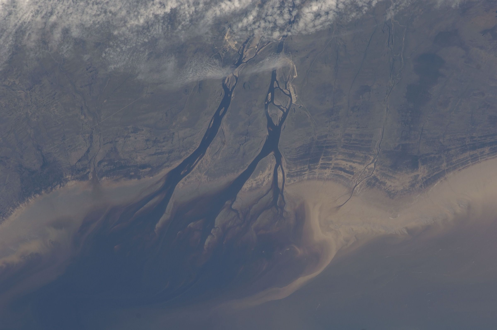
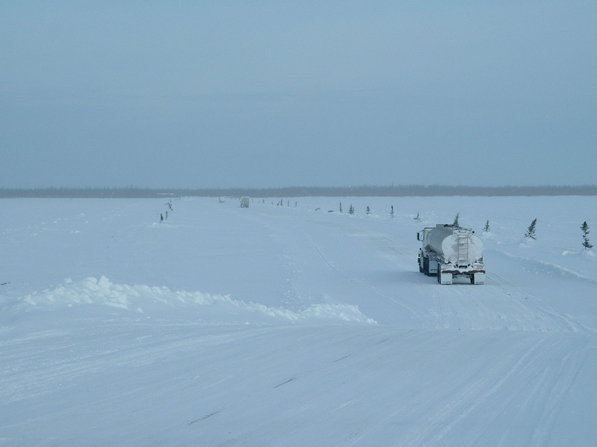
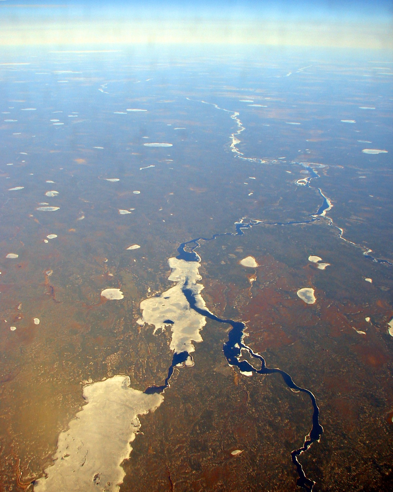

Notice
Spring flood & evacuation updates
During spring break-up on the Albany River, official evacuation notices are posted here and shared through the Band Office. This is a template card — replace it with your real notice.
All notices →
Photo: NASA / ISS Expedition 20 (public domain) · image credits
Wachiya — Welcome
Kashechewan First Nation is an Omushkego (Swampy Cree) community on the north shore of the Albany River, near the west coast of James Bay in Northern Ontario. We are a Treaty 9 nation rooted in the land, the river, and the annual rhythm of the goose hunt.
Who we are
Our people chose the Swampy Cree name Kishechiwan for the swift current of the Albany River. When the sign for the community's first post office arrived, it was spelled “Kashechewan,” and that spelling has been our official name ever since.1
Kashechewan came into being between 1958 and 1961, when most of the Anglican families of Fort Albany First Nation moved north along the coast. In 1977 the community was granted its own band council under the Indian Act, though it continues to share the Fort Albany 67 reserve with Fort Albany First Nation.1
Read our story
Figures reported together for Kashechewan and Fort Albany totalled 5,597 as of October 2024.1
Serving our members
Programs delivered by the First Nation and its partners for the health, education, safety, and future of our members.
Primary care and public-health services delivered through the community health centre, with support during flood evacuations and boil-water advisories.
Learn more →A new 24-classroom school opened in 2019, built on pilings so it can be moved with the community to higher ground.
Learn more →Modular housing and infrastructure designed to withstand — and eventually relocate above — the Albany River flood plain.
Learn more →Spring break-up monitoring and evacuation planning, coordinated with Mushkegowuk Council and partner agencies.
Learn more →Work toward the long-term move to higher ground, guided by the 2019 Framework Agreement.
Learn more →Community policing provided by the Nishnawbe-Aski Police Service, serving First Nations across Treaty 9.
Learn more →
Nêhiyawêwin — our language & land
For the Omushkego — the People of the Muskeg — life follows the land. Each spring and fall, families travel out on the land for the niska (goose) hunt, a practice that carries knowledge, language, and kinship between generations.
Cree remains a first language for many in Kashechewan, spoken at home and used to pass on oral history and the values of the community.
Explore our culture & languageStay informed
Notice
During spring break-up on the Albany River, official evacuation notices are posted here and shared through the Band Office. This is a template card — replace it with your real notice.
All notices →Community
Planning studies for moving the community to higher ground are underway following federal funding announced in December 2025.4
Read more →Council
Band Council meeting summaries and announcements will appear here once added by the community.
Governance →Get in touch
For programs, services, membership, and community inquiries, reach the Band Administration office.